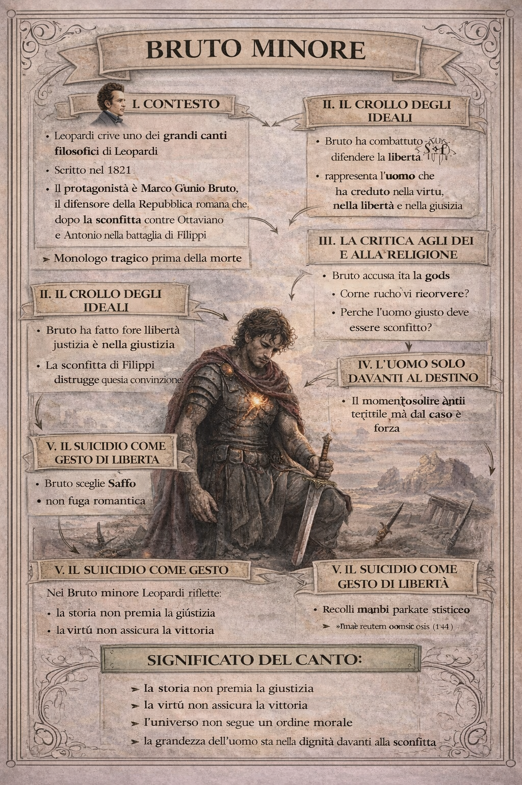

Bruto minore
1. Contesto dell’opera

Il Bruto minore è uno dei grandi canti filosofici di Leopardi, scritto nel 1821. Il protagonista è Marco Giunio Bruto, il difensore della Repubblica romana che, dopo la sconfitta contro Ottaviano e Antonio nella battaglia di Filippi, sceglie il suicidio.
Come spesso accade in Leopardi, la figura storica diventa un simbolo. Bruto non è soltanto un personaggio del mondo romano: rappresenta l’uomo che ha creduto nella virtù, nella libertà e nella giustizia, e che improvvisamente scopre che il mondo non è governato da questi valori.
Il canto è quindi un monologo tragico, pronunciato poco prima della morte.
2. Il crollo degli ideali
Bruto ha combattuto per difendere la libertà della Repubblica romana. Credeva che il mondo fosse guidato da principi morali, e che la virtù potesse vincere.
La sconfitta di Filippi distrugge questa convinzione.
La storia non premia la giustizia. Non vince chi ha ragione, ma chi ha più forza.
In questo momento Bruto scopre una verità terribile: il mondo non è governato dalla morale, ma dal caso e dalla forza.
Questa scoperta rappresenta una delle idee più profonde del pensiero leopardiano: l’universo non segue un ordine giusto o razionale.
3. La critica agli dei e alla religione
Nel canto Bruto si rivolge agli dei, ma non per pregare.
Li accusa.
Se esistono, perché permettono che la virtù venga distrutta? Perché l’uomo giusto deve essere sconfitto?
La risposta implicita è radicale: gli dei non governano il mondo. Non esiste una giustizia divina che ristabilisca l’ordine.
Qui Leopardi mette in discussione una delle grandi illusioni dell’umanità: l’idea che l’universo abbia un senso morale.
4. L’uomo solo davanti al destino
Quando Bruto comprende che la storia non premia la virtù e che gli dei non intervengono, resta solo una realtà: l’uomo è solo davanti al destino.
Il mondo appare come una forza cieca che travolge ogni cosa.
Questa visione è molto vicina a quella che Leopardi svilupperà pienamente nel pessimismo cosmico: l’universo non ha come scopo la felicità dell’uomo e non riconosce i suoi valori.
5. Il suicidio come gesto di libertà
Come Saffo, anche Bruto decide di morire.
Ma anche qui il gesto non è presentato come una fuga disperata. È una scelta di dignità.
Se il mondo è governato dalla forza e non dalla giustizia, Bruto rifiuta di vivere in un mondo che tradisce i suoi ideali.
La morte diventa quindi l’ultimo modo per restare fedele a se stesso.
Questo atteggiamento richiama una forma di stoicismo moderno: accettare la verità senza illusioni e mantenere la propria dignità anche nella sconfitta.
7. - La ribellione - lo stoicismo
6. Il significato del canto
Nel Bruto minore Leopardi riflette sul rapporto tra virtù e storia.
Il canto mostra che
- la storia non premia necessariamente la giustizia;
- la virtù non garantisce la vittoria;
l’universo non è governato da un ordine morale.
Di fronte a questa realtà, l’uomo non può cambiare il destino del mondo. Può però decidere come affrontarlo.
7. Conclusione per gli studenti
Il Bruto minore è una poesia tragica e filosofica. Leopardi usa la figura dell’eroe romano per parlare della condizione umana.
Bruto è sconfitto, ma non è umiliato.
La sua grandezza non sta nella vittoria, ma nella fedeltà ai propri principi anche quando il mondo dimostra che quei principi non governano la realtà.
Per Leopardi questa è una delle forme più alte di dignità umana: guardare la verità senza illusioni e restare fedeli a se stessi anche nella sconfitta.